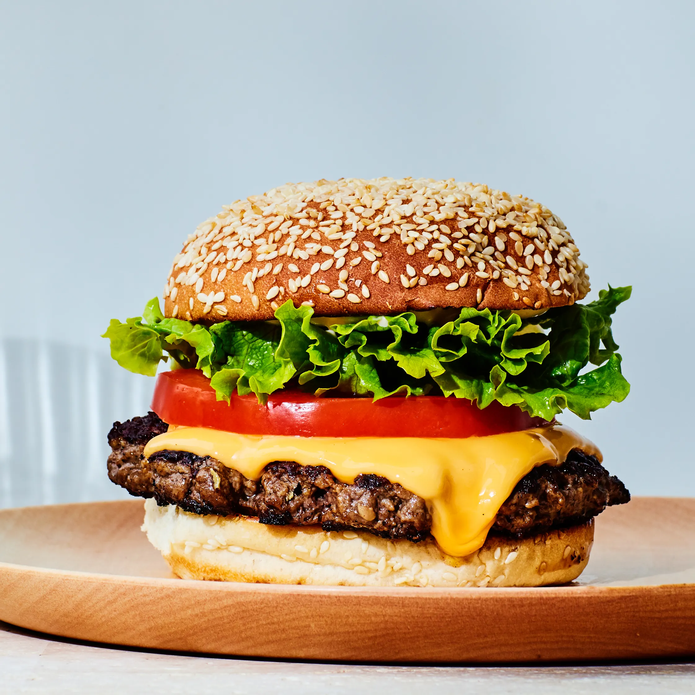

Burger
Home

Description
A quick and easy burger recipe that will make you make it every day!
Note that this recipe will make 4 burgers
Ingredients
- 3/4 pound freshly ground sirloin
- 1/4 pound freshly ground brisket (if you can't find brisket, substitute ground chuck)
- 2 tablespoons unsalted butter, plus more if needed
- 4 potato rolls, preferably Martin's brand
- 2 tablespoons vegetable oil
- Kosher salt, to taste
- Freshly ground black pepper, to taste
- 4 slices American cheese
- Four 1/4-inch-thick tomato slices
- 4 burger-sized pieces green-leaf lettuce
- Your favorite sauce
Steps
- In a large bowl, use your hands to gently combine ground sirloin and brisket. Divide into four equal-sized, loosely meat pucks about 2 1/2 inches thick. Place patties on a plate lined with plastic wrap or parchment; transfer to the freezer for 15 minutes (do not exceed this amount of time).
- Meanwhile, heat a griddle, large cast-iron skillet, or large heavy stainless-steel skillet over medium-high heat. Melt 2 tablespoons butter and place the buns, cut-side down, in the pan. Cook until cut sides are golden-brown, about 2 minutes (you may need to do this in two batches, using additional butter if needed). Place toasted buns on four plates, reserving griddle or skillet.
- Remove patties from freezer. Increase heat to high and add 2 tablespoons oil to the griddle or skillet; heat until oil begins to smoke. Working one at a time, add a patty to griddle and immediately press one of the spatulas flat on top of the patty. Use the handle of the other to hammer the spatula down, smashing the patty until 1/2 inch thick. (You'll have to hammer harder and longer than you might think.) Press down and slide the spatula to remove it without tearing the patty; generously season patty with salt and pepper. Repeat smashing process with remaining patties.
- Flip each patty once the first side is deeply browned and crisp with craggly edges, 1 1/2 to 2 minutes for medium. Season the cooked side generously with salt and pepper, then add a slice of cheese and continue to cook until melted, 1 1/2 to 2 minutes more. Transfer cooked patties to bottom burger buns.
- Top burgers with tomatoes and lettuce; spread top buns with Not-So-Secret Sauce and place on top. Serve immediately.